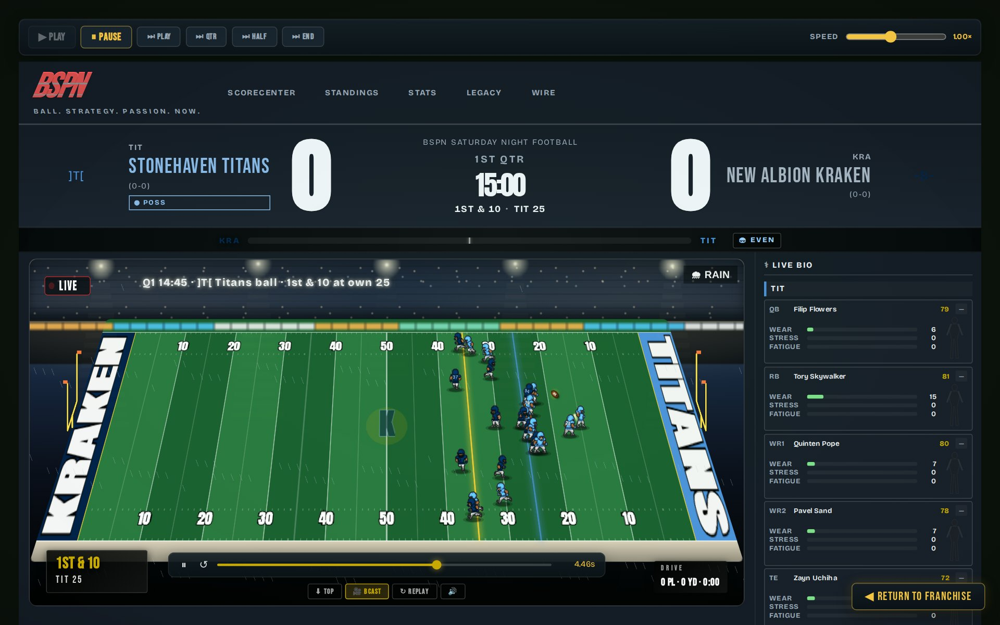
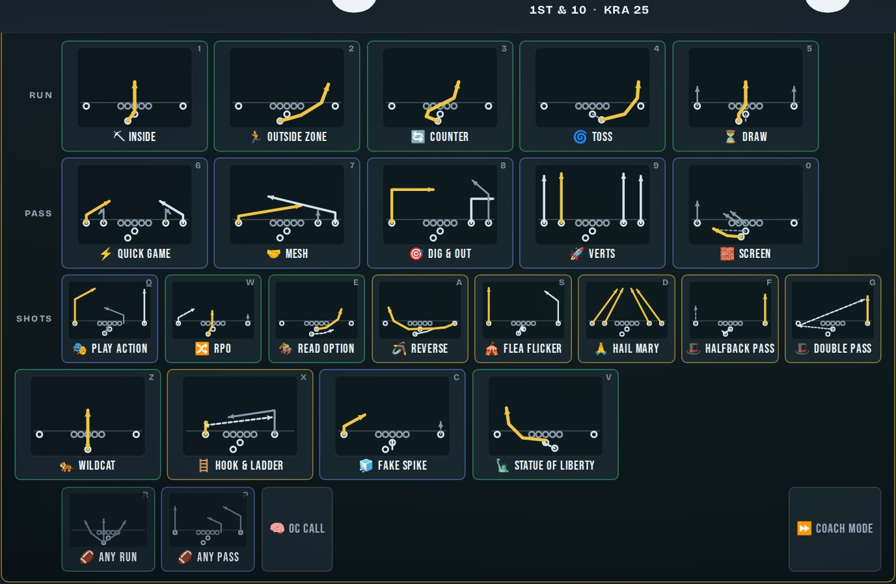
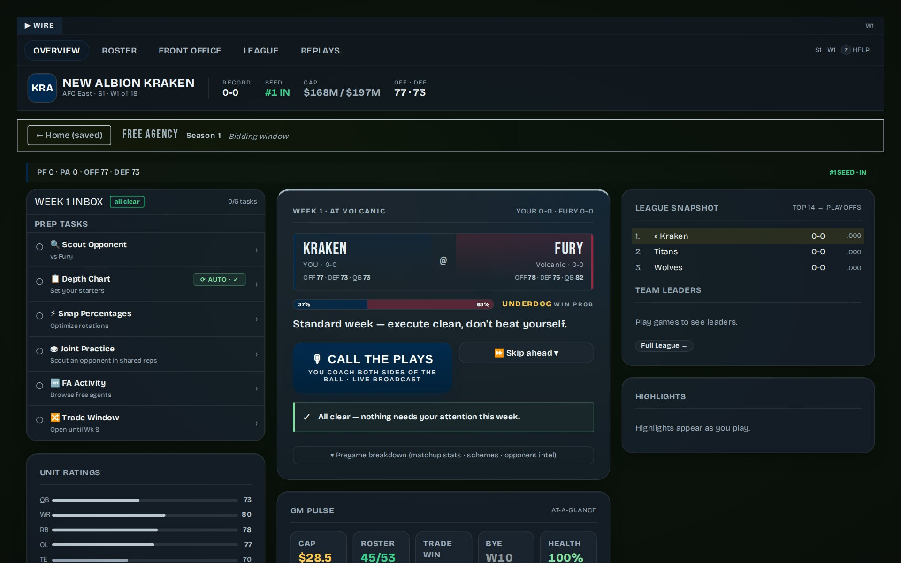

Run the franchise.
Call every snap.
A complete football GM sim that runs right here in your browser — cap sheets, trades, draft classes all week, then a live broadcast where you call the plays on Sunday. Yours from the first click: no download, no sign-up.
▶ Start your franchiseQuick Start puts you on the field in about 30 seconds · saves live in your browser

- 32 teams
- 17-game seasons
- 14-team playoffs
- FA bidding wars & drafts
- HOF careers & awards
- H2H live multiplayer
“He cut his franchise quarterback in October and the cap sheet still balanced. Cold. Brilliant. Cold.”
“Fourth-and-three, down five, and he dials up the Statue of Liberty. This league, folks.”
“Sixteen seasons in, a Hall-of-Fame wall, and a locker room that still believes.”
Quotes from the game's own broadcast crew — they'll be talking about you soon enough.
Call every snap — or none
The game pauses on your play calls, both sides of the ball: a full sheet of runs, passes, and shots — plus six gadget plays from the flea flicker to the hook & ladder.
- Route diagrams on every card, keyboard shortcuts for speed
- 4th-down, PAT, and defensive-shell decisions are yours too
- Rather manage? Defer any call — or hand the whole game to Coach Mode

A broadcast, not a spreadsheet
Every game renders as a living BSPN telecast — all 22 players on the field, weather, momentum swings, drive charts, replays, and a highlight reel that follows your season.
- Broadcast or top-down camera, scrub any play in slow motion
- Live player bios: wear, stress, and injuries as they happen
- Watch it, call it, or sim it instantly — your choice, per game
Real front-office problems
Cap hits, dead money, restructures, June-1 cuts. Trade windows, free-agency bidding wars, scouting fog, draft classes with busts and gems — and a locker room with opinions about your decisions.
- A weekly GM inbox that surfaces what actually needs you
- Careers, awards races, and a Hall of Fame that remembers
- Depth charts, snap counts, and load management that matter

Play a friend — provably fair
Host a live head-to-head match and send one link. The engine is deterministic — the same seed and the same calls always produce the same game — so every result can be re-simulated and verified. Nobody fudges a final score. Not your friend, not the server, not you.
Questions, answered
Is it really free?
Do I need to install anything?
Where do my saves live?
Does it work on my phone?
Do I have to call plays?
How does multiplayer stay fair?
Your franchise is one click away
▶ Start your franchiseFree · no install · no account · playing in ~30 seconds